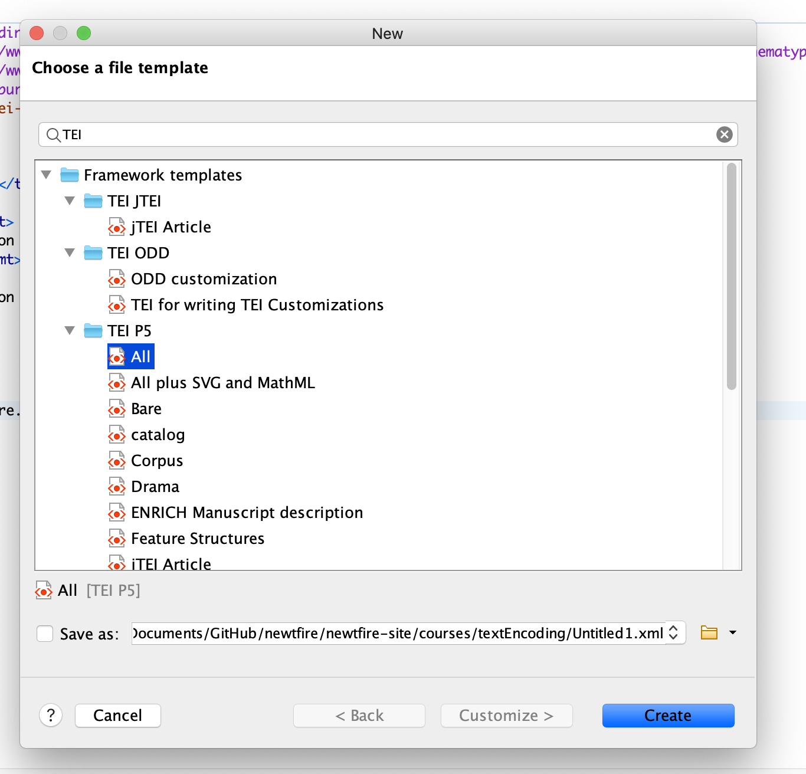

This is the second of a series of assignments to introduce you to the XML-based language of the Text Encoding Initiative (TEI). We are continuing to work with Anna Julia Cooper’s handwritten response to a survey of black college graduates in 1930.
With this exercise, experiment with writing some TEI code in oXygen to represent any one portion of the survey that you choose to attempt representing in markup.
It may help you to find a way to divide your computer screen or to look at two screens. You need to be working with three resources:
It may also help to look at some example TEI documents from other projects before you begin. Here are a pair of sample TEI files to help give you an idea of how these are structured:
Open the oXygen XML Editor to a new TEI document by selecting TEI P5 and All in the new file selection. To begin, open a new TEI file in <oXygen/> by clicking on the top left icon that looks like a corner-folded piece of paper (or going to File → New) and typing TEI in the search box. In the results, look for the TEI P5 options and choose the first one: All. This opens a file with a simple starter template and the TEI-All schema lines that we want for now as we begin coding. Here is a screen capture to show how to open a TEI-All file in <oXygen/>:
Look at the TEI file you opened and notice its characteristic two-part structure, with the teiHeader and text elements that are the children of the root element TEI. For this assignment we will be working in the <text> portion of the document.
Choose a portion of Anna Julia Cooper’s survey to try to represent in TEI encoding. That could be a portion of the form, with a selection of form questions and Cooper’s responses, or even just a portion of the form itself. Work with the TEI Guidelines to try a strategy with markup that makes sense to you, perhaps with resources we identified in our responses to TEI Exercise 1. Try to represent structure and content of some portion of this document. You may simply want to begin with a tag like p or line (looking these up in the Guidelines) to hold your transcription, and then investigate the Guidelines to try applying more descriptive and meaningful markup to separate typescript from handwriting.
Find a way to represent your selection of data and metadata from the survey document in the text portion of the TEI document. <oXygen/> comes with the current, very extensive schema rules for the TEI P5 installed, so that when you opened the TEI document it came with its own schema lines. As you code, notice that <oXygen/> will fire errors when XML is not well-formed, as well as when TEI validity is broken. You may also notice, as you apply tags, that the schema offers you suggestions of attributes or attribute values, helping to inform you about what the TEI makes available given a particular parent element. Do not worry too much about whether your tagging selections are correct or not, but try to make sure they are valid with the TEI and you maintain a green square in oXygen. Even if you do not, do your best with this and get as far as you can, and submit your very first attempt with TEI encoding before our next class.
Again (from our previous exercise) these portions of the TEI Guidelines may be helpful as you begin trying out TEI encoding:
When you have found a way to represent a portion of the survey’s document data and metadata in TEI, be sure to give your file a name that meets our homework file submission rules, and submit it in the appropriate place on Canvas for TEI Exercise 2.